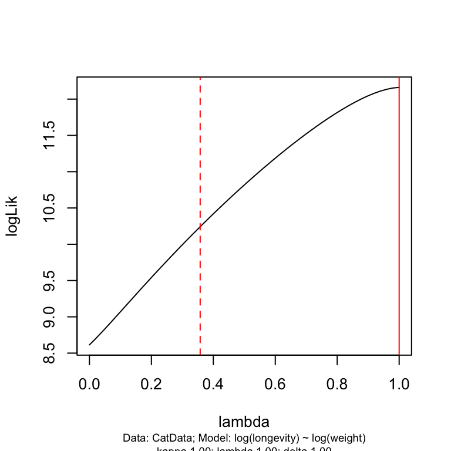
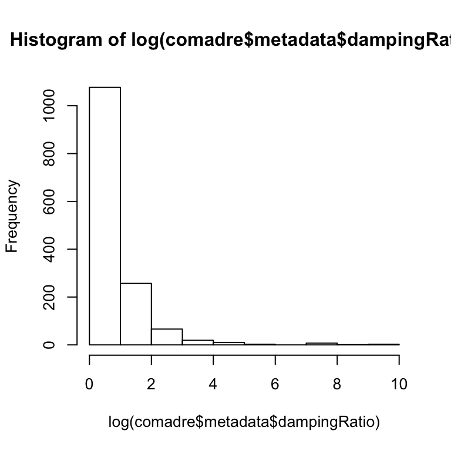
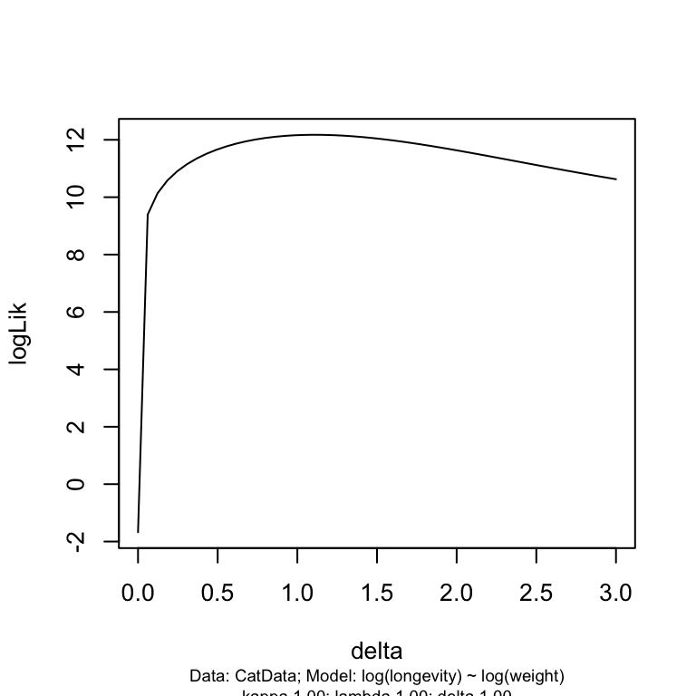
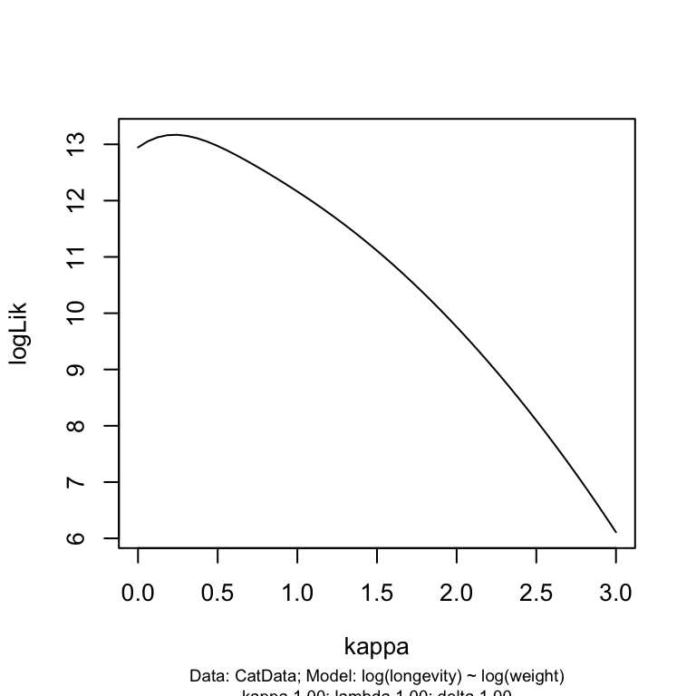
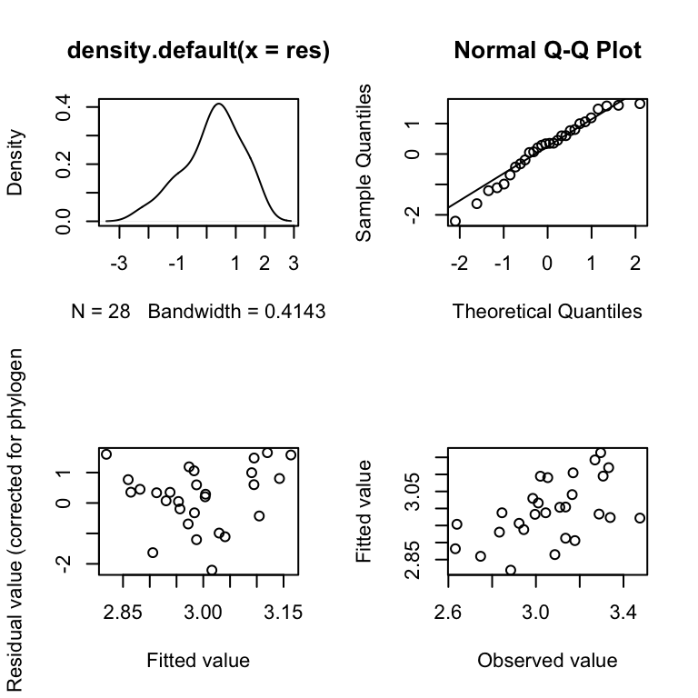

As we saw from the section on trait evolution above, even under the simplest models of evolution, closely related species will tend to resemble each other - they share similar trait values. This resemblance is termed phylogenetic signal. A technical definition of phylogenetic signal is that it is the statistical non-independence among species trait values due to their phylogenetic relatedness.
Other terms that have been used to describe this resemblance include “inertia” and “constraint”. However, these terms are often not appropriate because they are not well-defined and are used inconsistently (for example, the terms are often used to describe a process, rather than simply a pattern). The term “signal” is preferred when we are talking simply about the pattern observed, without any connotation about the process that got us there.
There are several methods for detecting and quantifying phylogenetic signal in a trait. We will first consider Blomberg’s K, a simple randomisation test measure, then look at a measure that uses a phylogenetic generalised least squares (PGLS) model.
Blomberg’s K is a simple signal measure where the significance is estimated with a permutation test.
The idea behind the measure is to ask whether the tree in question better fits a set of data than a tree where the data at the tips have been randomly permuted in order to destroy phylogenetic signal.
Firstly a test statistic is calculated. This is usually variance of the phylogenetic contrasts (we’ll come onto this later, but for now think of contrasts as differences between traits). If signal is strong, then related species will tend to have similar traits, and therefore the variance will be low. The significance of the \(K\) value is determined by repeatedly shuffling the data at the tips and recalculating the test statistic. The p-value can then be determined by a 1-tailed test. In other words you ask what proportion of the permutations were less than the test statistic.
Although it is very easy to do this “by hand” in R, the \(K\) value, and it’s significance, can be estimated with the Kcalc function of the picante package. The phylosignal function, also from picante is a wrapper for Kcalc that tests the significance of \(K\).
We must first read in some data. It is advisable to put it into a comparative.data object to ensure that the tips match up correctly with the data.
CatTrait <- read.csv("data/CatTrait.csv")
CatTrait$weight <- log(CatTrait$weight)
CatData <- comparative.data(data = CatTrait, phy = CatTree, names.col = "Species",na.omit=FALSE)
Kcalc(CatData$data$weight,CatData$phy)
#> Warning in match.phylo.data(phy, x): Data set lacks taxa names, these are
#> required to match phylogeny and data. Data are returned unsorted. Assuming
#> that data and phy$tip.label are in the same order!
#> [,1]
#> [1,] 1.193931
phylosignal(CatData$data$weight,CatData$phy)
#> Warning in match.phylo.data(phy, x): Data set lacks taxa names, these are
#> required to match phylogeny and data. Data are returned unsorted. Assuming
#> that data and phy$tip.label are in the same order!
#> K PIC.variance.obs PIC.variance.rnd.mean PIC.variance.P
#> 1 1.193931 0.08622628 0.1790704 0.001
#> PIC.variance.Z
#> 1 -3.631161In this example, the K test statistic is highly-significant (p = 0.001).
If strong phylogenetic signal exists, then we would expect the structure of the phylogeny to have a large influence on the traits observed at the tip of the tree. Pagel’s \(\lambda\) statistic capitalises on this idea by checking what happens to a model that includes the phylogenetic structure, as structure is eroded.
This approach uses a phylogenetic generalised least squares (PGLS) model. These are a sub-type of conventional GLS models, which are commonly used in situations where traits are correlated (e.g. spatial correlation). The way these models are fitted is analogous, but slightly different to, ordinary least squares (see Appendix). Using this approach, a PGLS regression model is fitted that correlates the trait values to the overall mean (in “R-speak”, something like pgls(y~1)). The “trick” is that the model also includes a variance-covariance (\(VCV\)) matrix that also describes the phylogenetic structure. This phylogenetic structure, determined by topology and branch lengths, contributes information to the model, and should thus be considered to be another variable in the model.
Pagel’s \(\lambda\) is a transformation parameter that alters the length of the internal branch lengths the phylogenetic tree (Figure below). The effect of applying it is that phylogenetic structure is eroded as \(\lambda\) is reduced from 1 towards 0. When \(\lambda\) is equal to 0, all phylogenetic structure is removed, and all species are effectively phylogenetically independent (they are in a “star phylogeny”). When \(\lambda\) is 1, traits covary in direct proportion to shared evolutionary history (i.e. they conform to Brownian motion). Therefore we can consider \(\lambda\) to be a measure of the strength of signal.
The effect of the \(\lambda\) branch length transformation on the tree. When \(\lambda\) is 1, the original tree is recovered, and as \(\lambda\) is reduced towards 0, phylogenetic structure is eroded, until \(\lambda\) = 0, when the phylogeny becomes a star phylogeny (a giant polytomy). Only internal branches are affected.
The \(\lambda\) value can be estimated by maximum likelihood by fitting a PGLS model, and then optimising the \(\lambda\) transformation that is applied to the variance-covariance matrix in order to achieve the highest log-likelihood. What actually happens is that the off-diagonal elements of the variance-covariance matrix that describes the correlation structure of the are multiplied by \(\lambda\).
Lets read in some trait data for the cats and see if there is any phylogenetic signal there. First we need to import the data with read.csv, then we need to combine the data with the comparative.data command. This is not strictly necessary, but is advisable, otherwise it becomes tricky to ensure that the traits are associated with the correct species. NOTE: the pgls function in caper subsets the data in a clumsy way. If any of the data in your data set are NA, the whole row will be omitted. Therefore, only include data you want to use!
CatTrait <- read.csv("data/CatTrait.csv")
CatTrait <- CatTrait[,1:2]
CatTrait$weight <- log(CatTrait$weight)
CatData <- comparative.data(data = CatTrait, phy = CatTree, names.col = "Species",na.omit=FALSE)CatData now contains both the phylogeny (CatData$phy) and the trait data (CatData$data), and the data and tree tips match up correctly. We can now call this object in our phylogenetic signal estimation or regression analyses.
Estimating signal strength with the \(\lambda\) transformation is done with pgls function of the caper package as follows:
sigmodel<-pgls(weight~1,CatData,lambda="ML")
summary(sigmodel)
#>
#> Call:
#> pgls(formula = weight ~ 1, data = CatData, lambda = "ML")
#>
#> Residuals:
#> Min 1Q Median 3Q Max
#> -0.70994 -0.19944 -0.03317 0.13510 0.41477
#>
#> Branch length transformations:
#>
#> kappa [Fix] : 1.000
#> lambda [ ML] : 1.000
#> lower bound : 0.000, p = 5.3771e-05
#> upper bound : 1.000, p = 1
#> 95.0% CI : (0.752, NA)
#> delta [Fix] : 1.000
#>
#> Coefficients:
#> Estimate Std. Error t value Pr(>|t|)
#> (Intercept) 9.46906 0.53894 17.57 < 2.2e-16 ***
#> ---
#> Signif. codes: 0 '***' 0.001 '**' 0.01 '*' 0.05 '.' 0.1 ' ' 1
#>
#> Residual standard error: 0.2893 on 34 degrees of freedom
#> Multiple R-squared: 0, Adjusted R-squared: 0
#> F-statistic: NaN on 0 and 34 DF, p-value: NAIn this example, likelihood ratio tests that determine model significance have been done automatically by the pgls function. The lower bound indicates the p-value when the maximum likelihood estimate of \(\lambda\) is compared to a model with a \(\lambda\) value of 0, upper bound gives the p-value when the maximum likelihood estimate of \(\lambda\) is compared to a model with a \(\lambda\) value of 1. The lambda [ML] is the maximum likelihood estimate itself. Where possible, the 95% confidence intervals (CI) of the ML estimate are shown. However, in this case the upper value is not given (i.e. it is NA because the ML estimate was 1, which coincides with the upper bound of values searched when looking for the ML estimate). In situations where both upper and lower CI are NA, this implies that the likelihood surface is so flat that the models are not distinguishable (i.e. altering \(\lambda\) has no significant effect on the outcome of the model).
Branch lengths contain information about the evolutionary process (e.g. about the amount of time for selection and drift, and therefore for divergence, to occur).
The branch lengths in the phylogeny can also be transformed in evolutionarily meaningful ways that can address particular theories (more on this later). Consider the OU model (above). When the stabilising force of selection is very strong, the trait may not diverge much at all from its ancestral value, and therefore any effects of evolutionary history could be obliterated. This extreme
The previous two approaches are only applicable to estimating signal in continuous traits. Fritz and Purvis (2010) developed a measure they call \(D\) that can be applied to discrete, binary, traits.
If a trait is highly conserved, with only a basal division between two clades expressing either trait value, then the only change will be along the two daughters at the root. This will give a summed value of 1: the two differences between the root nodal value of 0.5 and the ancestors of the 1 and 0 clades. In contrast, if the trait is labile, more differences will be observed and the sum will be higher.
The phylo.d function in the caper package calculates D, and compares the observed value with D values obtained from models where trait values are shuffled randomly among the tips (phylogenetic randomness) and a Brownian motion threshold model (where a continuous trait is evolved along a tree, and then a threshold applied that would result in the observed trait prevalence).
data(BritishBirds)
BritishBirds <- comparative.data(BritishBirds.tree, BritishBirds.data, binomial)
redPhyloD <- phylo.d(BritishBirds, binvar=Red_list)
print(redPhyloD)
#>
#> Calculation of D statistic for the phylogenetic structure of a binary variable
#>
#> Data : BritishBirds.data
#> Binary variable : Red_list
#> Counts of states: 0 = 149
#> 1 = 32
#> Phylogeny : BritishBirds.tree
#> Number of permutations : 1000
#>
#> Estimated D : 0.5610536
#> Probability of E(D) resulting from no (random) phylogenetic structure : 0
#> Probability of E(D) resulting from Brownian phylogenetic structure : 0.018As we have already seen, the tree-like structure in the relationships between species mean that all species are related. The degree of relatedness is continuous: some species are closely related, others are distantly related, and still more are somewhere in between. Technically, this relatedness is a special form of autocorrelation and, like other forms of autocorrelation, it means that data on species traits cannot be considered to be independent. In a pgls, as used to estimate phylogenetic signal, the variance-covariance matrix describes this relationship.
A failure to account for these phylogenetic relationships can lead to situations where apparently strong relationships rest on few independent events (Figure below), or where strong relationships within groups are masked by the phylogenetic differences between groups (Figure below).
Since statistical independence is an underlying assumption of many statistical methods, it will come as no surprise that there are a number of methods available to deal with this. We will cover two of these methods - the phylogenetic generalised least squares method and Felsenstein’s (1985) independent contrasts method.
Phylogenetic autocorrelation. (a) The ordinary least squares (ols) regression (solid line) implies a strong relationship between the two traits. However, the relationship within the individual clades is far from strong. The relationship simply reflects a change in the mean value between clades. (b) The ols regression shows a fairly weak relationship between the two traits. However, within the clades the relationships are strongly positive. (Reproduced from Orme et al. 2011)
As already described, phylogenetic generalised least squares models (pgls) can be fit using the pgls function, from the caper package in R. The branch length transformation that is applied is part of the model. It makes particular assumptions about how evolution has proceeded. One of the questions we must ask is whether the transformation chosen (and the parameter value of the transformation) is appropriate. We will address these questions in the following few examples. Using a PGLS model has the advantage of allowing the simultaneous estimation of signal and the fitting of a phylogenetically corrected regression model.
Again, the function requires a comparative data object which includes both a data set and a phyogeny (created using the comparative.data function). We already created a comparative data object called CatData elsewhere.
CatTrait <- read.csv("CatTrait.csv")
CatTrait <- CatTrait[,names(CatTrait)%in%c("Species","weight","longevity")]
CatTrait$weight <- log(CatTrait$weight)
CatData <- comparative.data(data = CatTrait, phy = CatTree, names.col = "Species",na.omit=FALSE)
model1 <- pgls(log(longevity) ~ log(weight), CatData)
print(model1)
#>
#> Call:
#> pgls(formula = log(longevity) ~ log(weight), data = CatData)
#>
#> Coefficients:
#> (Intercept) log(weight)
#> 1.4886 0.6746
summary(model1)
#>
#> Call:
#> pgls(formula = log(longevity) ~ log(weight), data = CatData)
#>
#> Residuals:
#> Min 1Q Median 3Q Max
#> -0.102780 -0.026368 0.008218 0.035202 0.091284
#>
#> Branch length transformations:
#>
#> kappa [Fix] : 1.000
#> lambda [Fix] : 1.000
#> delta [Fix] : 1.000
#>
#> Coefficients:
#> Estimate Std. Error t value Pr(>|t|)
#> (Intercept) 1.48856 0.66266 2.2464 0.03340 *
#> log(weight) 0.67461 0.29228 2.3081 0.02921 *
#> ---
#> Signif. codes: 0 '***' 0.001 '**' 0.01 '*' 0.05 '.' 0.1 ' ' 1
#>
#> Residual standard error: 0.0468 on 26 degrees of freedom
#> (7 observations deleted due to missingness)
#> Multiple R-squared: 0.1701, Adjusted R-squared: 0.1381
#> F-statistic: 5.327 on 1 and 26 DF, p-value: 0.02921Besides Pagel’s \(\lambda\), which was mentioned above, other, biologically-informed transformations exist, and different modes of evolution can be investigated by checking the fits of models with various evolutionarily meaningful transformations.
Pagel’s delta (\(\delta\)) transformation is a model of evolution where rates of trait change increase or decrease through time. Values of delta < 1 transform branch lengths to be increasingly shorter towards the tips, describing a model in which trait change occurs rapidly early in the history of a clade and then slows through time. Models with delta > 1 describe an increasing rate of character evolution through time, while delta = 0 is identical to a Brownian motion model. This is therefore akin to Early Burst model.
Pagel’s kappa (\(\kappa\)) transformation model raises branch lengths to the power of kappa. A punctuational model is specified when kappa = 0 and all branch lengths are equal. Again, the model reduces to Brownian Motion when kappa = 1. Values of kappa between 0 and 1 tend to shorten long branch lengths more than short ones, describing a model of saturating evolution (i.e. radiation into a finite number of niches). This should not be confused with Blomberg’s K!
The above example fits a gls model with an untransformed variance-covariance matrix. Therefore, the \(\lambda\), \(\delta\) and \(\kappa\) parameters are all fixed to be 1, which is equivalent to a fully independent contrast model. It is straightforward to optimise the branch lengths by maximum likelihood by setting the values to be "ML". Alternatively, the parameter values can specified. For example, we could fit the equivalent of an ordinary least squares regression by specifying lambda=0 (however, note that the lower bound of the optimisation algorithm are set to 1e-6, so you would need to change these to 0, as in the example below). The outcome of such transformations are illustrated in the following figure.
model2 <- pgls(log(longevity) ~ log(weight), CatData, lambda="ML")
summary(model2)
#>
#> Call:
#> pgls(formula = log(longevity) ~ log(weight), data = CatData,
#> lambda = "ML")
#>
#> Residuals:
#> Min 1Q Median 3Q Max
#> -0.102780 -0.026368 0.008218 0.035202 0.091284
#>
#> Branch length transformations:
#>
#> kappa [Fix] : 1.000
#> lambda [ ML] : 1.000
#> lower bound : 0.000, p = 0.0075463
#> upper bound : 1.000, p = 1
#> 95.0% CI : (0.360, NA)
#> delta [Fix] : 1.000
#>
#> Coefficients:
#> Estimate Std. Error t value Pr(>|t|)
#> (Intercept) 1.48856 0.66266 2.2464 0.03340 *
#> log(weight) 0.67461 0.29228 2.3081 0.02921 *
#> ---
#> Signif. codes: 0 '***' 0.001 '**' 0.01 '*' 0.05 '.' 0.1 ' ' 1
#>
#> Residual standard error: 0.0468 on 26 degrees of freedom
#> (7 observations deleted due to missingness)
#> Multiple R-squared: 0.1701, Adjusted R-squared: 0.1381
#> F-statistic: 5.327 on 1 and 26 DF, p-value: 0.02921plot(log(CatData$data$weight),log(CatData$data$longevity),xlab="log(weight)",ylab="log(longevity)")
abline(model1,lty=1)
abline(model2,lty=1,lwd=2)
model3 <- pgls(log(longevity) ~ log(weight), CatData, lambda=0,bounds = list(lambda=c(0,1), kappa=c(1e-6,3), delta=c(1e-6,3)))
abline(model3,lty=2)
legend("bottomright",legend=c("lambda = 1","optimised lambda","lambda = 0"),lty=c(1,1,2),lwd=c(1,2,1)) This figure shows regression models for different values of \(\lambda\). In this case, the phylogeny does not make a big difference.
Other, biologically-informed transformations exist, and different modes of evolution can be investigated by checking the fits of models with various evolutionarily meaningful transformations.
Pagel’s delta (\(\delta\)) transformation is a model of evolution where rates of trait change increase or decrease through time. Values of delta < 1 transform branch lengths to be increasingly shorter towards the tips, describing a model in which trait change occurs rapidly early in the history of a clade and then slows through time. Models with delta > 1 describe an increasing rate of character evolution through time, while delta = 0 is identical to a Brownian motion model. This is therefore akin to Early Burst model.
Pagel’s kappa (\(\kappa\)) transformation model raises branch lengths to the power of kappa. A punctuational model is specified when kappa = 0 and all branch lengths are equal. Again, the model reduces to Brownian Motion when kappa = 1. Values of kappa between 0 and 1 tend to shorten long branch lengths more than short ones, describing a model of saturating evolution (i.e. radiation into a finite number of niches). This should not be confused with Blomberg’s K!
We can look at a likelihood surfaces of the various branch transformation parameters using the pgls.profile function (Figure below). Note that the \(\kappa\) transformation requires a 3 dimensional array rather than a simple 2-dimensional variance-covariance matrix. This is achieved with the argument in the function that you would have used when you created the data object.
CatData <- comparative.data(data = CatTrait, phy = CatTree, names.col = "Species",na.omit=FALSE,vcv=TRUE, vcv.dim=3)
model2 <- pgls(log(longevity) ~ log(weight), CatData, lambda="ML")
summary(model2)
#>
#> Call:
#> pgls(formula = log(longevity) ~ log(weight), data = CatData,
#> lambda = "ML")
#>
#> Residuals:
#> Min 1Q Median 3Q Max
#> -0.09969 -0.01576 0.01550 0.03847 0.07466
#>
#> Branch length transformations:
#>
#> kappa [Fix] : 1.000
#> lambda [ ML] : 1.000
#> lower bound : 0.000, p = 0.0077244
#> upper bound : 1.000, p = 1
#> 95.0% CI : (0.358, NA)
#> delta [Fix] : 1.000
#>
#> Coefficients:
#> Estimate Std. Error t value Pr(>|t|)
#> (Intercept) 1.49807 0.68491 2.1872 0.03791 *
#> log(weight) 0.66870 0.30613 2.1844 0.03814 *
#> ---
#> Signif. codes: 0 '***' 0.001 '**' 0.01 '*' 0.05 '.' 0.1 ' ' 1
#>
#> Residual standard error: 0.04683 on 26 degrees of freedom
#> (7 observations deleted due to missingness)
#> Multiple R-squared: 0.1666, Adjusted R-squared: 0.1345
#> F-statistic: 5.196 on 1 and 26 DF, p-value: 0.03108
mod2.lambda <- pgls.profile(model2, "lambda")
mod2.delta <- pgls.profile(model2, "delta")
mod2.kappa <- pgls.profile(model2, "kappa")
plot(mod2.lambda)
plot(mod2.delta)
plot(mod2.kappa)
 Likelihood surfaces of \(\lambda\), \(\delta\) and \(\kappa\) for model1.
Like other model objects in R, PGLS models can be examined using plot(model). This is best done in a 2x2 plot, using par(mfrow=c(2,2)). In this layout (Figure below), the top two plots are a density plot of the residuals, and a normal Q-Q plot, which shows the distribution of the residuals vs. their expected theoretical distribution. The bottom two plots show the fitted values against the residuals, and against the observed values, so we can check for pattern in the residuals of the model
par(mfrow=c(2,2))
plot(model2)Diagnostic plots of model2, from above.
In addition, models can be compared using anova and logLik. It is also possible to obtain the AIC score.
Therefore, it is possible to test and compare a range of models.
CatData <- comparative.data(data = CatTrait, phy = CatTree, names.col = "Species",na.omit=FALSE,vcv=TRUE, vcv.dim=3)
model1 <- pgls(log(longevity) ~ log(weight), CatData, lambda="ML")
model2 <- pgls(log(longevity) ~1, CatData, lambda="ML")
AIC(model1,model2)
#> df AIC
#> model1 2 -20.32418
#> model2 1 -17.22253The independent contrasts method is a little bit of a dated method now, but since it is still used a fair amount I will explain how it works. You may also see this method in the literature termed Phylogenetically Independent Constrasts (PIC), or Comparative Analysis with Independent Contrasts (CAIC). Often, contrasts are standardised by division by the square root of the sum of its branch lengths (this is the standard deviation, assuming a Brownian motion mode of evolution).
In the caper library, the two main functions for fitting PIC models are brunch and crunch which are for categorical and continuous variables respectively.
First we’ll fit a model with crunch. Crunch cannot handle zero length branches, so we first need to add a small value to the edge that has a length of zero. Furthermore, unlike with normal regression models, transformations must be carried out before model fitting. This is because of the way that contrasts are calculated in R. If we were to specify a transformation within the model, it would be applied to the contrast, rather than the value at the tip. This is obviously much harder to interpret!
CatData$phy$edge.length[which(CatData$phy$edge.length==0)] <- 0.001
CatData$data$loglongevity <- log(CatData$data$longevity)
CatData$data$logweight <- log(CatData$data$weight)
crunchmod1 <- crunch(loglongevity ~ logweight, CatData)
summary(crunchmod1)
#>
#> Call:
#> lm(loglongevity ~ logweight - 1, data = contrData)
#>
#> Residuals:
#> Min 1Q Median 3Q Max
#> -0.077459 -0.030141 0.000122 0.036081 0.084285
#>
#> Coefficients:
#> Estimate Std. Error t value Pr(>|t|)
#> logweight 0.6746 0.2923 2.308 0.0292 *
#> ---
#> Signif. codes: 0 '***' 0.001 '**' 0.01 '*' 0.05 '.' 0.1 ' ' 1
#>
#> Residual standard error: 0.0468 on 26 degrees of freedom
#> Multiple R-squared: 0.1701, Adjusted R-squared: 0.1381
#> F-statistic: 5.327 on 1 and 26 DF, p-value: 0.02921Note that the estimates provided by this method are almost identical to those produced by the PGLS model with a \(\lambda\) value of 1.
It is also possible to fit the same kind of model using pic, from the ape package. This function computes the phylogenetically independent contrasts directly, and the regression model can be fitted using lm. Below I extract the relevant data from CatData, drop the tips where we have no data, calculate the contrasts and fit a linear model. You will observe that the model is exactly the same as for crunch, although it is trickier to prepare the data. The best advice is probably to use crunch!
Note, for statistical reasons that I won’t get into, the regression should be fit through the origin (see Garland et al. (1992)).
picdata <- data.frame(loglongevity = CatData$data$loglongevity,logweight=CatData$data$logweight)
row.names(picdata) <- row.names(CatData$data)
new.phy <- drop.tip(CatData$phy,row.names(picdata)[is.na(picdata$loglongevity)])
picdata <- na.omit(picdata)
pic.y <- pic(picdata$loglongevity,new.phy)
pic.x <- pic(picdata$logweight,new.phy)
picmodel<-lm(pic.y~pic.x-1)
summary(picmodel)
#>
#> Call:
#> lm(formula = pic.y ~ pic.x - 1)
#>
#> Residuals:
#> Min 1Q Median 3Q Max
#> -0.077459 -0.038925 -0.000122 0.028375 0.084285
#>
#> Coefficients:
#> Estimate Std. Error t value Pr(>|t|)
#> pic.x 0.6746 0.2923 2.308 0.0292 *
#> ---
#> Signif. codes: 0 '***' 0.001 '**' 0.01 '*' 0.05 '.' 0.1 ' ' 1
#>
#> Residual standard error: 0.0468 on 26 degrees of freedom
#> Multiple R-squared: 0.1701, Adjusted R-squared: 0.1381
#> F-statistic: 5.327 on 1 and 26 DF, p-value: 0.02921